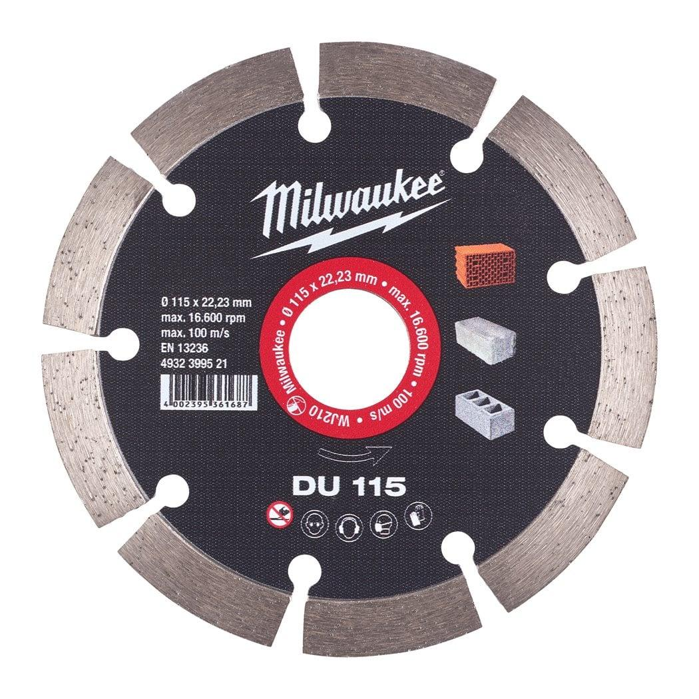
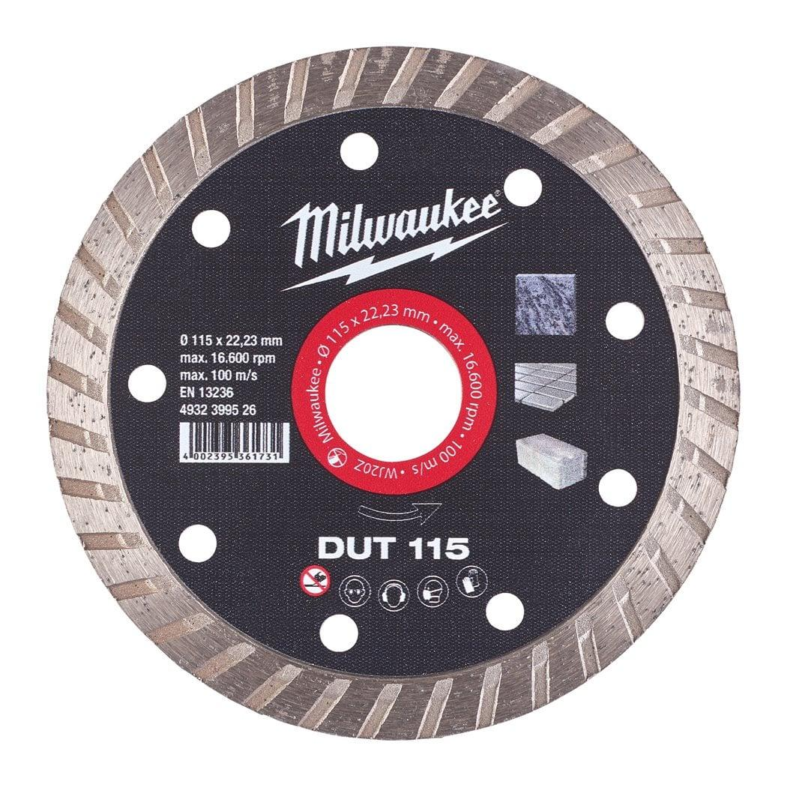
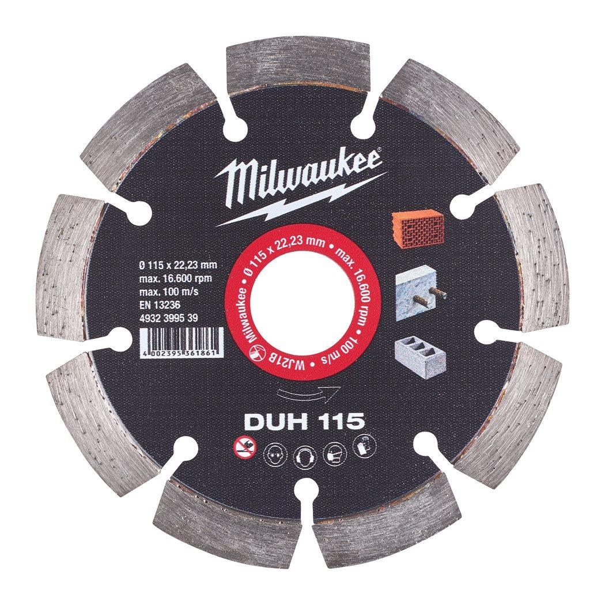
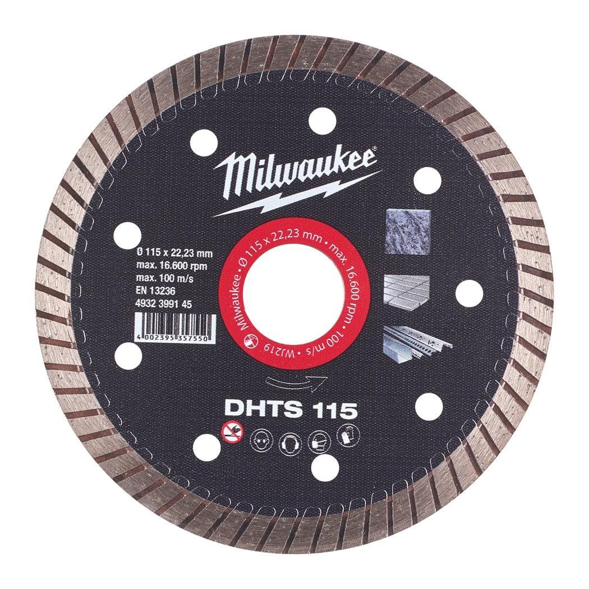
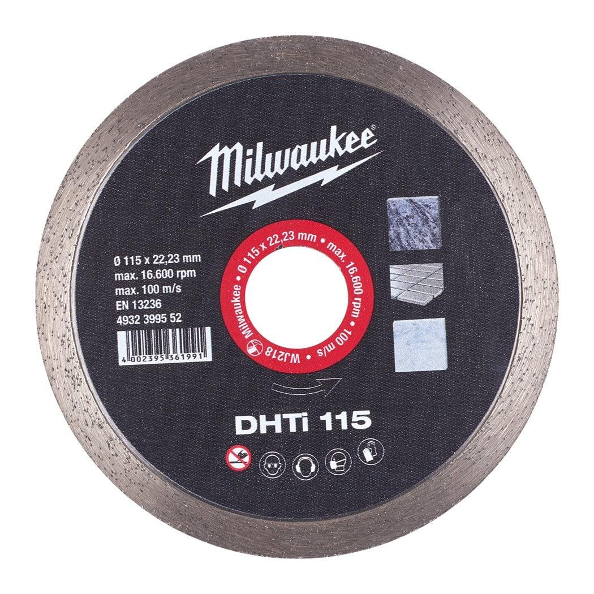
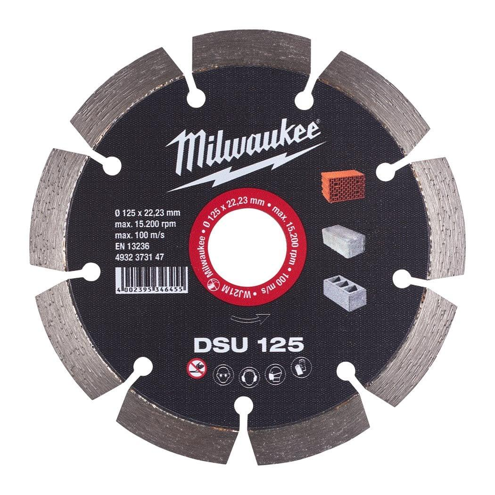
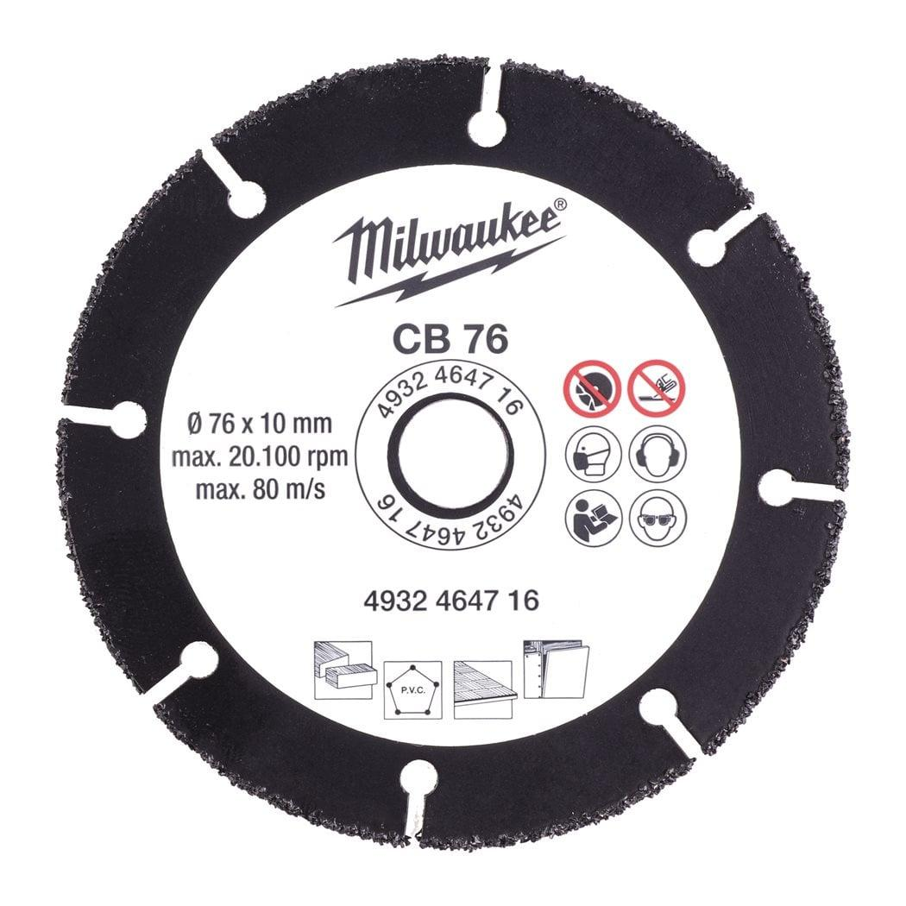

| Fits MILWAUKEE® | SUDD 230 |
| Bore size (mm) | 22.23 |
| Cutting width (mm) | 3.0 |
| Disc diameter (mm) | 230 |
| Materials suited for | Reinforced concrete|Concrete|Brick|Tile|Natural Stone|Granite |
| Pack quantity | 1 |
| Segment height (mm) | 10 |
| Article Number | 4932479463 |
| EAN | 4058546372576 |